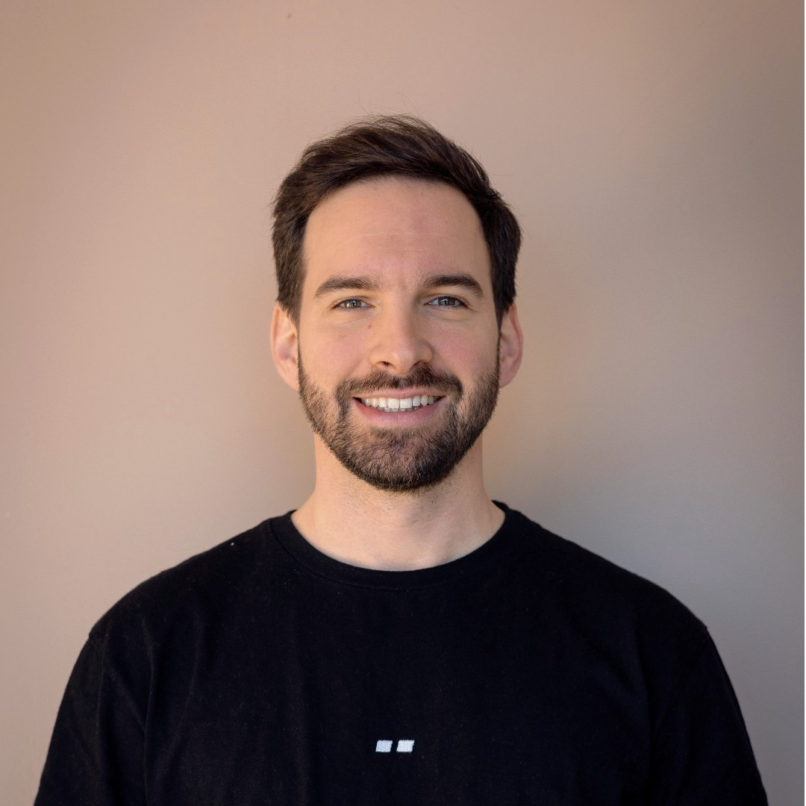

Internal Reporting System
Recovered ~40 hours/month at Whitesmith by replacing manual reporting with an LLM-powered pipeline.
Claude · Make · Gumloop
Gonçalo Louzada
Ten years at the leadership layer, hands on AI for the last three.
Former CEO. Built and sold software. Now building it myself.
01 / About

I've spent a decade at the leadership layer. Four years as CEO of Whitesmith, scaling it from €1M to €2M with a team of around thirty and healthy margins. In between I co-founded Qold, took it to paying customers, then shut it down when the unit economics didn't stack up.
Now I build the systems and processes that let companies execute without chaos. I've also been shipping AI tools in production for the last three years, both inside Whitesmith and for clients.
02 / Currently
Now Open to Chief of Staff, Head of Operations, and Founder's Associate roles. Also taking on fractional engagements helping founders identify and automate internal processes.
03 / Built
Recovered ~40 hours/month at Whitesmith by replacing manual reporting with an LLM-powered pipeline.
Claude · Make · Gumloop
LLM-powered business AI readiness assessment. Helps founders and leadership teams identify where AI actually fits in their operations.
LLM APIs · Web app
Chrome extension that summarises web pages with GPT. Built end-to-end and shipped to the Chrome Web Store.
Chrome extension · GPT
Agentic workflow for document analysis and content generation. Built in Cowork to handle structured information processing.
Cowork · Claude
04 / Experience
05 / Contact
Hiring or building something? I'm open to full-time roles and fractional work. Easiest way to reach me is email.